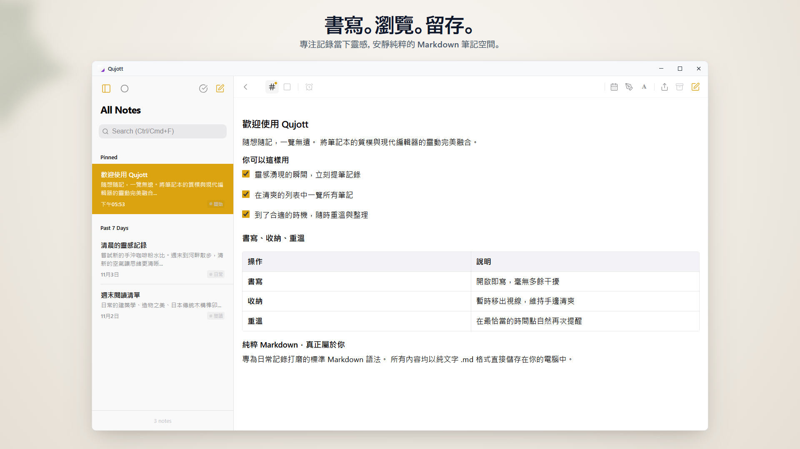
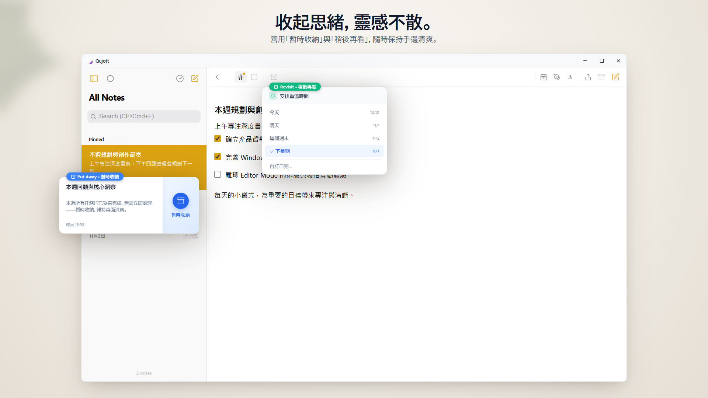
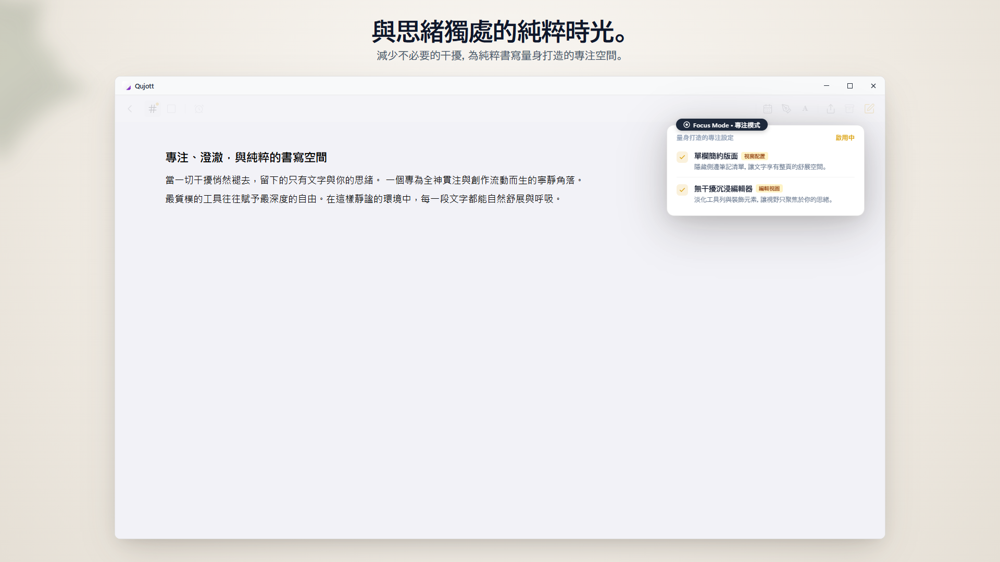
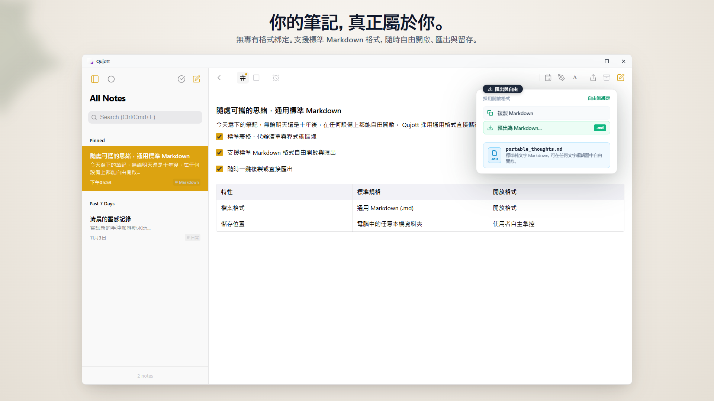
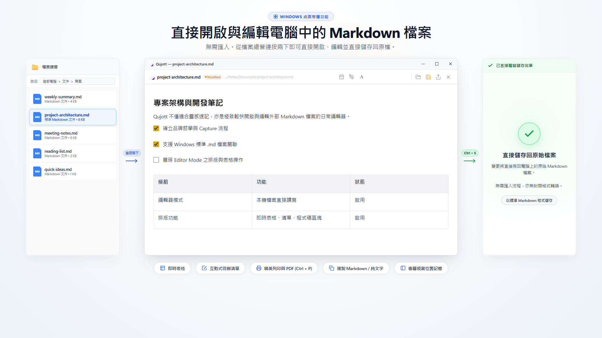
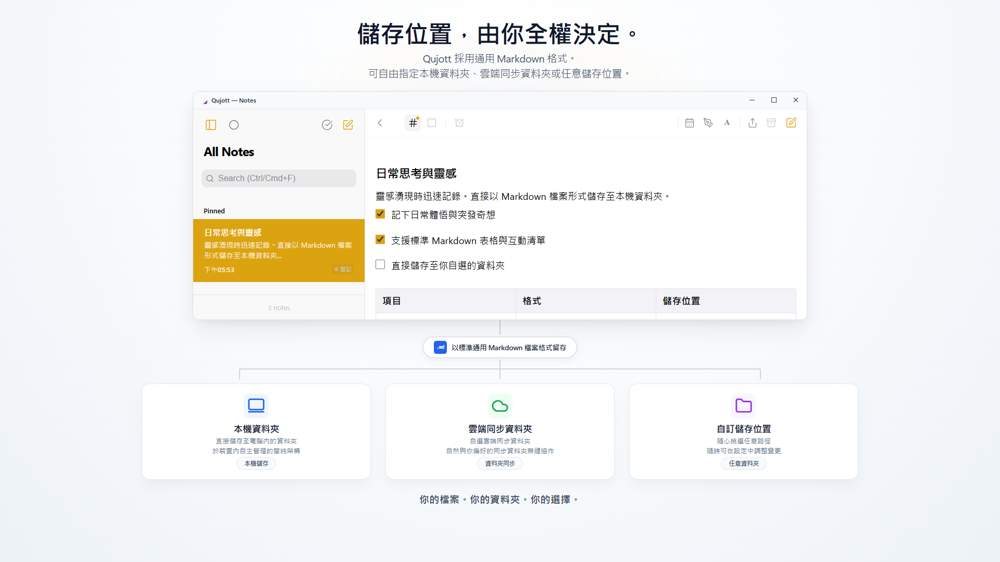
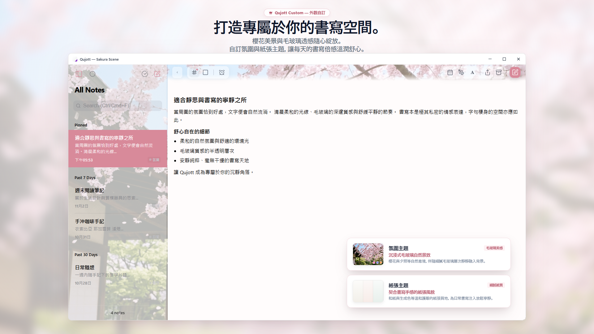

Qujott
靈感湧現的瞬間，輕鬆記下，
隨時自在重溫。
Qujott 結合了紙質便條本的隨手好讀與文字編輯器的自由靈活，是一款安靜純粹的輕量筆記本。
整理留給以後。先讓思緒，常伴左右。
支援標準通用 Markdown 格式。自由儲存為純文字檔案，隨心開啟與編輯。

思緒與筆記清單自然並列，沉靜簡約的雙欄空間
就像鍵盤旁的紙質便條本，隨手即寫。
Qujott 並非為了打造繁複的任務清單或龐大的知識資料庫而生。
它就像靜置在桌面上的紙質隨手筆記本，只專注於一件事：當靈感湧現的瞬間，動筆不再有任何猶豫與負擔。
下筆前無需煩惱資料夾分類，也不會強迫你預先標籤歸類。
直接捕捉掠過腦海的字句並安放身旁，往後重溫瀏覽時再來輕鬆整理。
溫柔移出視線，在最合適的時機再次相聚。
寫完的筆記無需急著刪除，使用「暫時收納 (Put Away)」即可將其暫時移出視線，保持工作桌面清爽俐落。
設定「稍後再看 (Revisit)」，筆記便會在今天、明天或下週等預定時刻靜靜回到清單頂部。沒有刺耳的鬧鈴催促，在最自然的步調中與思緒重逢。

不佔桌面的「收納」與在適當時機自然重現的「稍後再看」
徹底排除干擾，專注於字裡行間。
可隱藏側邊欄切換為單欄的「Focus Mode」。
褪去所有多餘的視覺元素，為你營造一處能完全靜心梳理思緒、暢快書寫的純粹空間。

排除多餘裝飾，全神貫注於字句之中的 Focus 專注模式
所有字句，皆百分之百屬於你。
在 Qujott 中撰寫的所有筆記均儲存為標準 Markdown (.md) 格式。
絕不使用封閉專有格式進行綁定。任何時候你都能在其他文字編輯器中自由開啟、編輯、匯出或備份。

所有筆記皆儲存為標準 Markdown (.md)，隨時自由閱讀、遷移與編輯
直接開啟現有 Markdown 檔案進行編修。
可直接在 Qujott 中開啟電腦內的現有 Markdown 檔案，編輯並按下 Ctrl+S 直接儲存回原檔。
完全不需要任何檔案匯入程序或格式轉換。日常也能作為輕巧靈活的 Markdown 編輯器隨開隨用。

直接開啟 Markdown 檔案，就地編輯並即時儲存回原檔 (Editor Mode)
筆記存放於何處，完全由你決定。
筆記存放目錄可自由指定：電腦本機資料夾、現有的雲端同步資料夾或外接硬碟。
無需註冊或登入任何雲端帳號，直接將筆記存放在你指定的資料夾中隨心使用。

自由選擇儲存路徑：本機磁碟、雲端同步資料夾或外接硬碟
將書寫角落，打造成專屬舒心天地。
透過如櫻花般融入毛玻璃質感的氛圍主題「Atmosphere Scenes」與紙質色彩，為每日書寫時光營造賞心悅目的靜謐美感（Qujott Pro 買斷選項）。
更支援 UI 介面縮放（80% 至 160%），無論在高解析螢幕或筆記型電腦上，都能調整出最舒適的閱讀視覺。

沉浸感氛圍主題 Atmosphere Scenes (櫻花) 與支援各螢幕的介面縮放